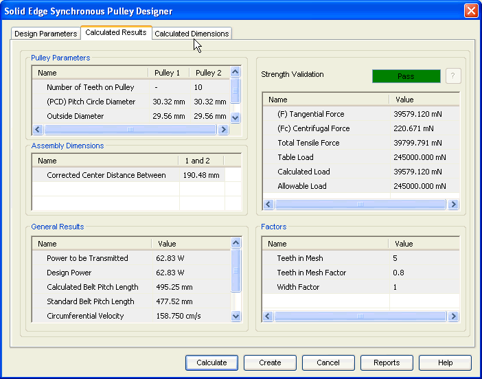

Synchronous Calculated Results tab
The Calculated Results tab provides the options you use to view the results of calculation.

Displays the specific parameters of the pulleys. Pitch circle diameter, Angle of contact are some of the important parameters.
Displays the outputs related to the pulleys assembly such as transmission ratio, center distance between the pulleys.
Displays general results of the pulleys. Design power, calculated belt pitch length are some of the important parameters.
Displays the overall performance of the synchronous pulleys in terms of Pass/Fail. You can also review various loads carried and allowable load capacity of the synchronous belt.
Displays the various factors calculated for pulleys.
Learn more
Synchronous Pulley moduleUsing the Synchronous Pulley module
Synchronous Design Parameters tab
Synchronous Pulley Calculated Dimensions tab
Synchronous Pulley tutorial
How to (Synchronous Pulleys)
Frequently asked questions (Synchronous Pulleys)
Standards used for Synchronous Pulley calculations